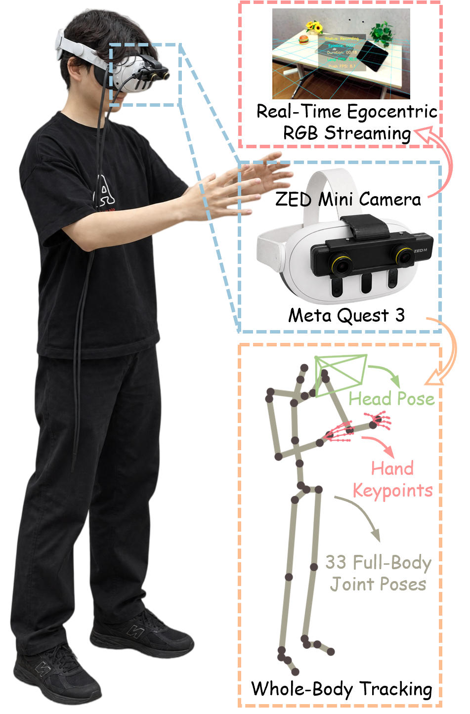
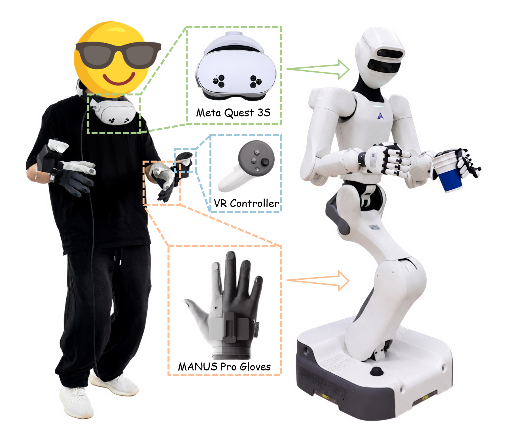
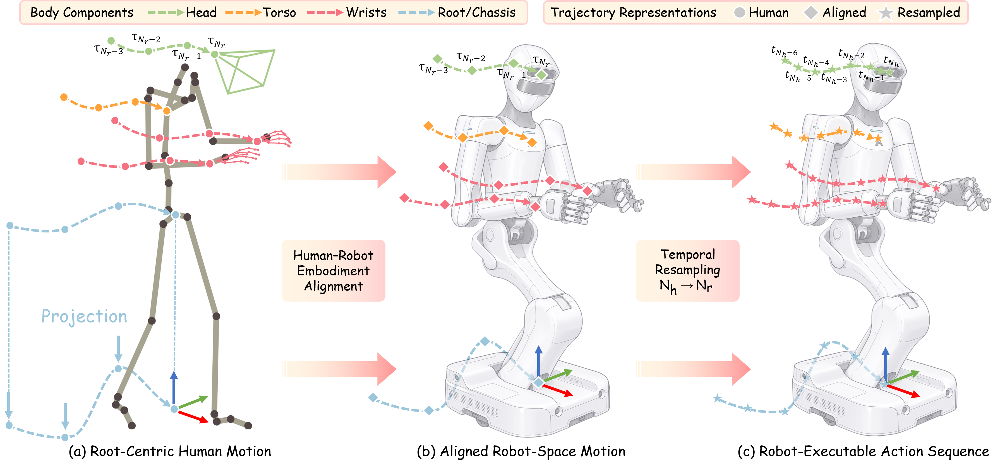
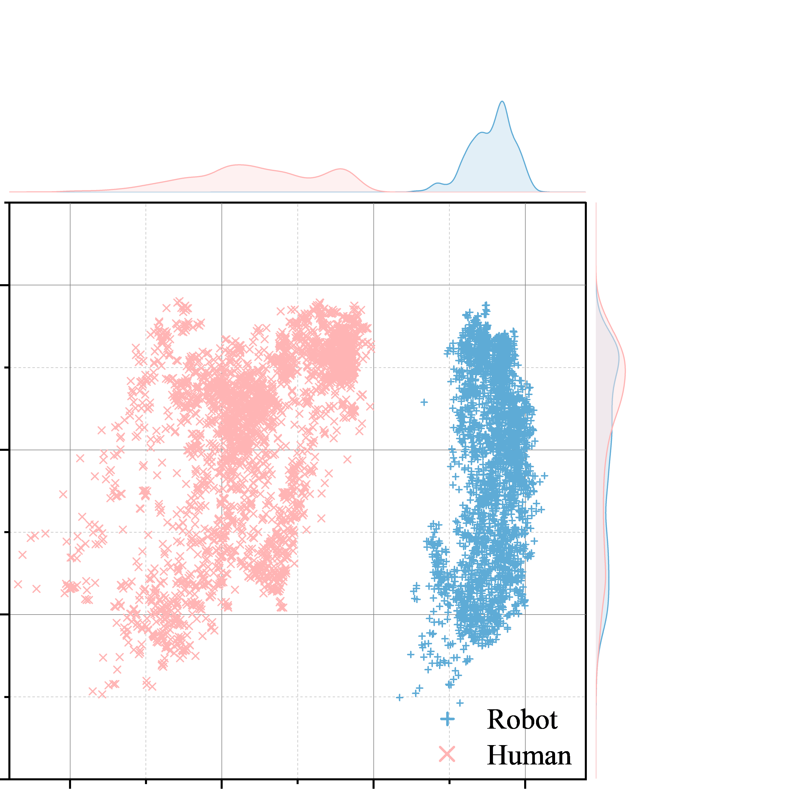
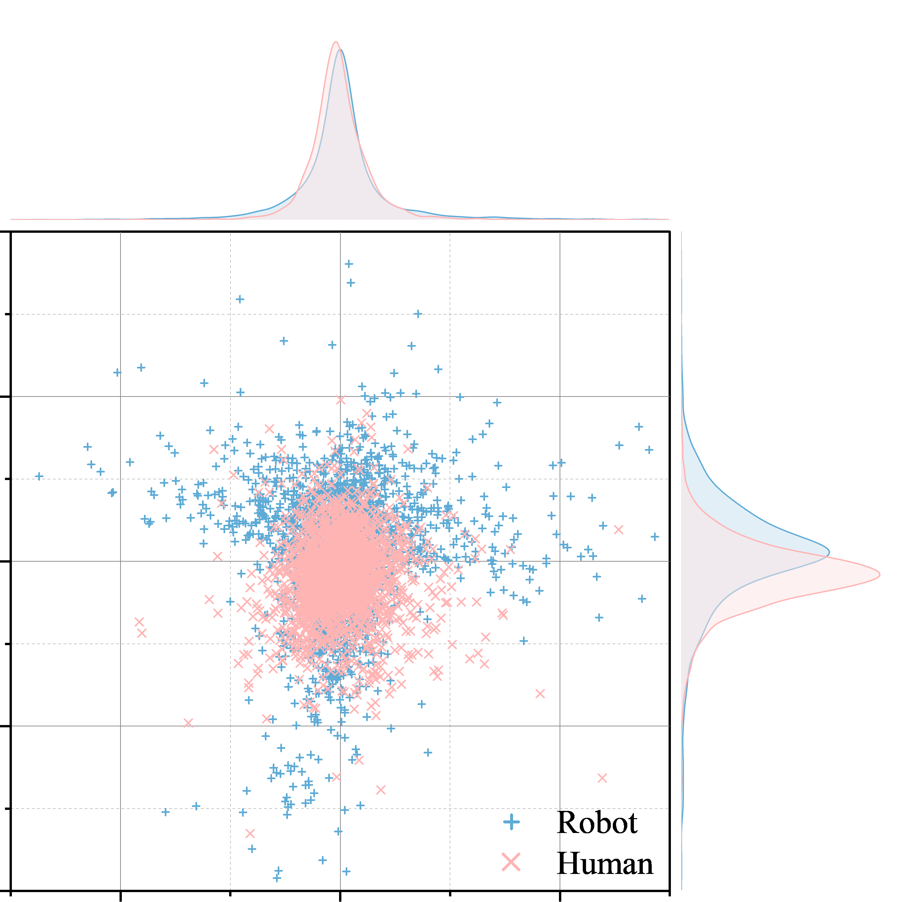

Embodiment
Alignment
Retarget whole-body human motion into the robot embodiment.
Research highlights
Mobile bimanual dexterous manipulation requires continuous coordination of locomotion, whole-body motion, and finger-level dexterity, creating a severe robot demonstration bottleneck. DexRoam is a complete system for learning such behaviors from egocentric whole-body human demonstrations. To preserve the fine-grained structure of human motion, we perform three explicit alignment stages — embodiment, action-semantic, and temporal — transforming human motion into continuous, coupled robot-compatible action supervision for standard VLA policies. To make collection scalable, DexRoam further provides a tracker-free capture system using only a consumer VR headset and a head-mounted stereo camera, without external cameras or motion trackers.
Across five real-world tasks and two VLA backbones, aligned human demonstrations raise average success from 29% to 56% on GR00T N1.7 and from 32% to 57% on π0.5, while matching robot-only training with 50% fewer robot demonstrations.
Portable capture
Portable egocentric capture of RGB and whole-body human motion, without external cameras or body-worn trackers.

Robot teleoperation
A single operator simultaneously controls locomotion, torso, dual arms, head, and dexterous hands for synchronized whole-body demonstrations.

Human motion, robot-ready
Three explicit stages bridge different bodies, control semantics, and execution speeds — without losing the coordination of whole-body motion.

Retarget whole-body human motion into the robot embodiment.
Express motion as robot-centric relative actions with shared control semantics.
Resample trajectories by task progress to match robot execution timescales.
Alignment results
Human and robot whole-body action distributions before and after full alignment.


Real-world deployment
03 · Policy learning
Does aligned human supervision improve policy learning, and which training paradigm leverages it most effectively?
04 · Data efficiency
How does aligned human data improve robot learning with limited robot demonstrations?
50% fewer robot demonstrations. With 25 robot demonstrations, human-assisted training approaches or matches the 50-demo Robot-only reference across the evaluated tasks.